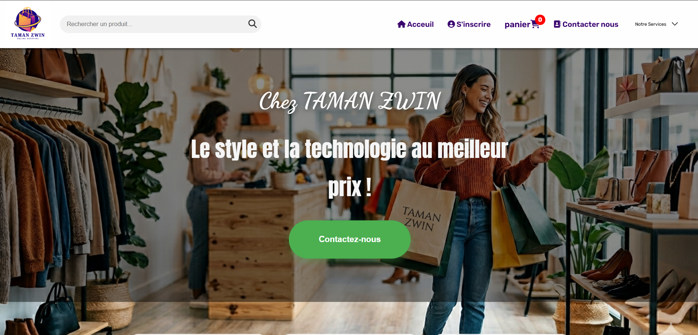
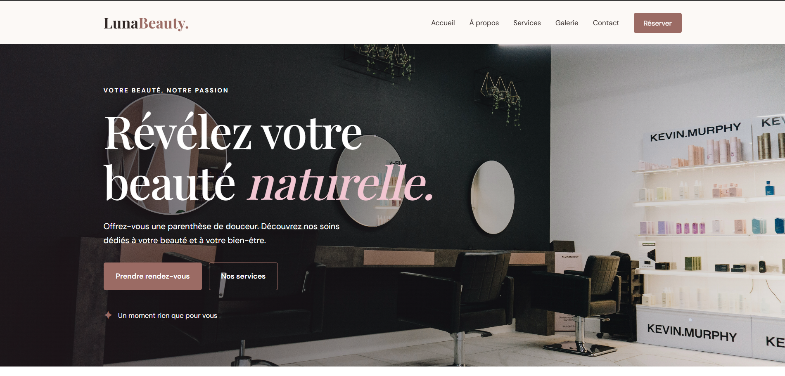

Développement web
Construire des pages web structurées et des interfaces adaptées aux utilisateurs.
HTMLCSSJavaScriptPHP
BONJOUR, JE SUIS
Je transforme des idées en expériences web simples, modernes et utiles. J’aime apprendre, résoudre des problèmes et donner vie aux projets grâce au code.
01const developer = {
02 name: 'Sanae',
03 focus: 'Web development',
04 curiosity: true,
05 learning: true
06};
07// Always building something new ✨
Titulaire d’un BTS en Développement des Applications Informatiques, je m’intéresse au développement web et à la création d’applications utiles.
Je souhaite continuer à renforcer mes compétences, explorer de nouvelles technologies et contribuer à des projets concrets dans un environnement stimulant.
Faisons connaissance ↗Les technologies que j’ai étudiées et pratiquées au fil de ma formation et de mes projets.
Construire des pages web structurées et des interfaces adaptées aux utilisateurs.
Organiser les données, concevoir des tables et réaliser des requêtes SQL.
Appliquer la logique algorithmique et résoudre des problèmes avec du code.
Utiliser les outils de développement et structurer les solutions.
* Le niveau peut varier selon la technologie. Je continue à pratiquer et à progresser.
Un aperçu d’un projet développé pendant mon parcours en informatique.

APERÇU VISUEL DU PROJETConception et développement d’une application e-commerce de vêtements. Le site permet de consulter les produits, parcourir les catégories et gérer le panier et les commandes.

SITE VITRINE
Conception et développement d’un site web moderne pour un salon de beauté, avec présentation des services, galerie photos et prise de rendez-vous.

SITE VITRINE
Conception et développement d’un site web moderne et élégant pour un restaurant, avec un menu interactif, un système de réservation et une interface bilingue (français/anglais). Réalisé en HTML, CSS et JavaScript avec un design responsive.
Les étapes qui ont contribué à construire mes bases en informatique.
Formation en programmation, développement d’applications, bases de données et conception de solutions informatiques.
Deux expériences de stage pour découvrir le milieu professionnel, appliquer mes acquis et développer mon sens de l’organisation.
Une opportunité, une collaboration ou simplement envie d’échanger ? Écrivez-moi, je serai ravie de vous répondre.